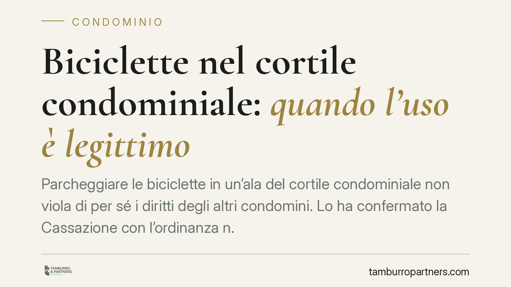

Biciclette nel cortile condominiale: quando l'uso è legittimo
Parcheggiare le biciclette in un'ala del cortile condominiale non viola di per sé i diritti degli altri condomini. Lo ha confermato la Cassazione con l'ordinanza n. 26539, respingendo le pretese del proprietario di un garage. La decisione ribadisce i confini dell'uso delle parti comuni e chiarisce un punto decisivo: chi contesta deve dimostrare l'abuso.

Il caso
Un condomino titolare di un garage lamentava la presenza di biciclette parcheggiate in un'ala del cortile condominiale. A suo dire, quella collocazione ledeva i suoi diritti sullo spazio comune e sull'accesso al box.
La Corte di Cassazione, con l'ordinanza n. 26539, ha respinto la pretesa. Le biciclette erano disposte in modo ordinato, in una porzione marginale del cortile. Non impedivano l'accesso al garage né limitavano il pari uso dell'area da parte degli altri condomini. Da qui la legittimità del loro collocamento.
Inquadramento normativo
La decisione ruota intorno all'art. 1102 del Codice civile, che disciplina l'uso della cosa comune. La norma consente a ciascun partecipante di servirsi del bene comune a due condizioni: non alterarne la destinazione e non impedire agli altri condomini di farne pari uso secondo il loro diritto.
Si tratta di due limiti distinti. Il primo riguarda la funzione dello spazio: un cortile non può essere trasformato, ad esempio, in deposito stabile di materiali ingombranti che ne mutino la natura. Il secondo tutela la contemporaneità dell'uso: ogni condomino deve poter utilizzare il bene, anche se non necessariamente nello stesso modo o nella stessa porzione.
Il "pari uso" non significa uso identico. La giurisprudenza ammette da tempo che un condomino possa trarre dalla cosa comune un'utilità maggiore o diversa, purché resti intatta per gli altri la possibilità di servirsene. Parcheggiare le biciclette in un angolo non consuma lo spazio altrui, se gli altri conservano la facoltà di utilizzare il cortile per gli scopi consentiti.
Il punto decisivo: l'onere della prova
L'aspetto più rilevante dell'ordinanza riguarda la ripartizione dell'onere probatorio. Chi agisce in giudizio sostenendo che un altro condomino ha superato i limiti dell'art. 1102 c.c. deve dimostrarlo. Non basta affermare un disagio o un fastidio.
Nel caso esaminato, il proprietario del garage non ha fornito la prova che le biciclette gli impedissero l'accesso al box o gli precludessero l'uso dell'area comune. In assenza di questa dimostrazione, la sua domanda è stata rigettata.
È una logica coerente con i principi generali del processo civile: chi fa valere un diritto deve provare i fatti che ne costituiscono il fondamento. Applicata al condominio, questa regola scoraggia le contestazioni generiche e impone un approccio concreto e documentato.
Implicazioni pratiche
Per chi vive in condominio la lettura è duplice.
Da un lato, l'uso delle parti comuni gode di uno spazio di manovra ampio. Collocare biciclette, fioriere o altri oggetti in modo ordinato e non invasivo rientra tipicamente nelle facoltà del condomino, a patto di non compromettere l'uso altrui o la destinazione del bene.
Dall'altro, chi intende contestare un uso ritenuto eccessivo non può limitarsi a protestare. Deve raccogliere elementi oggettivi: fotografie, rilievi, testimonianze che documentino l'effettivo impedimento. Una contestazione priva di prova è destinata, con ogni probabilità, a non trovare accoglimento.
La pronuncia conferma inoltre che il semplice fastidio soggettivo non equivale a lesione di un diritto. La valutazione resta ancorata a parametri concreti: accessibilità, funzionalità, pari godimento.
Cosa fare in concreto
- Verificate il regolamento condominiale: può contenere clausole specifiche sull'uso del cortile più restrittive dell'art. 1102 c.c. e pienamente valide se di natura contrattuale.
- Documentate la situazione prima di agire: fotografate lo stato dei luoghi, annotate date e misure, individuate eventuali testimoni.
- Valutate l'effettivo impedimento, non il semplice disagio: chiedetevi se l'uso contestato vi preclude davvero l'accesso o il godimento dello spazio.
- Tentate prima la via assembleare o la mediazione: un confronto in assemblea o una mediazione civile, obbligatoria in molte liti condominiali, può evitare un contenzioso dall'esito incerto.
- Raccogliete gli elementi probatori prima del giudizio: senza una prova solida del superamento dei limiti, l'azione rischia il rigetto con addebito delle spese.
Disclaimer
Contributo informativo a cura di Tamburro & Partners - Avv. Giuseppe Tamburro. Non costituisce parere legale.
Ogni condominio ha una storia a sé.
Se gestisci un'amministrazione e vuoi un confronto su una specifica questione condominiale, scrivi allo studio. Ti rispondiamo entro un giorno lavorativo.